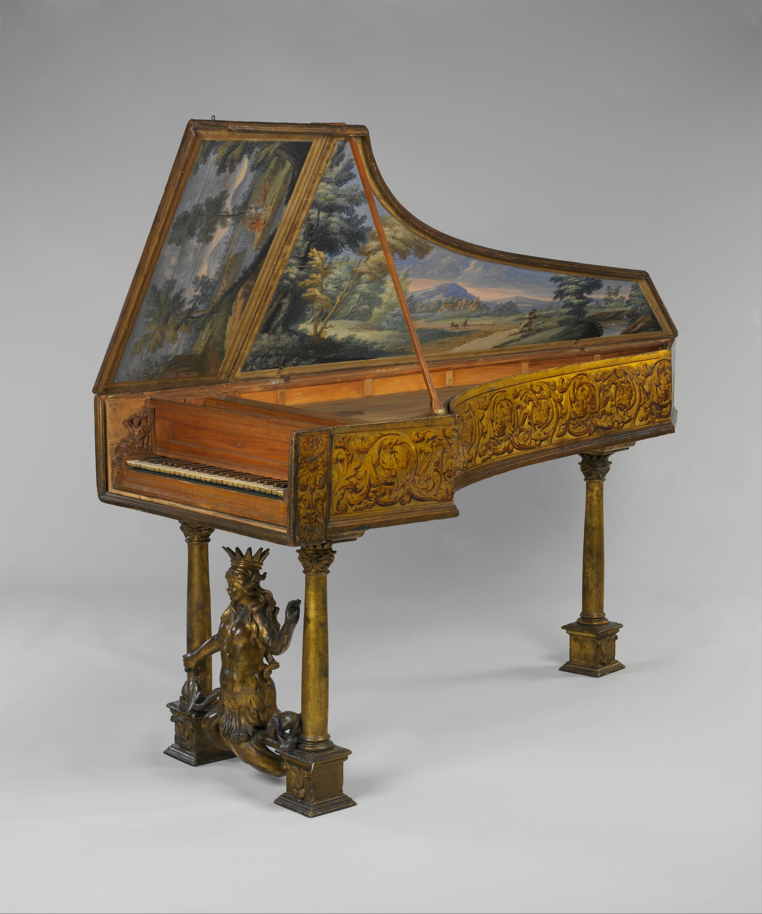
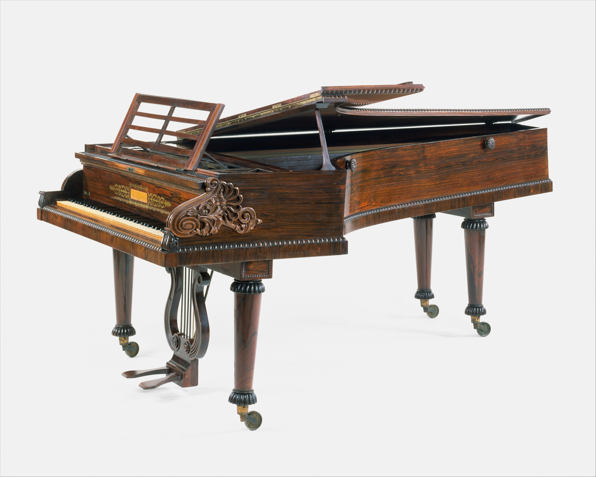
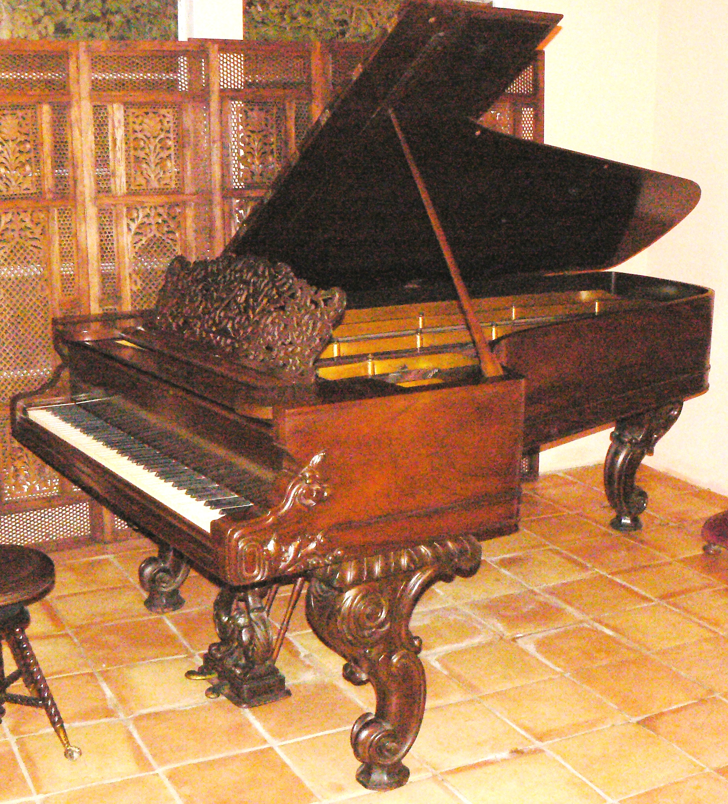
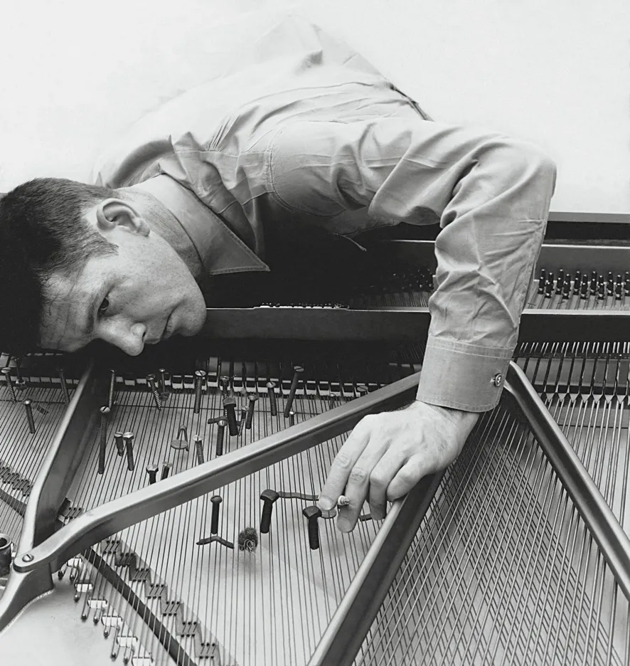
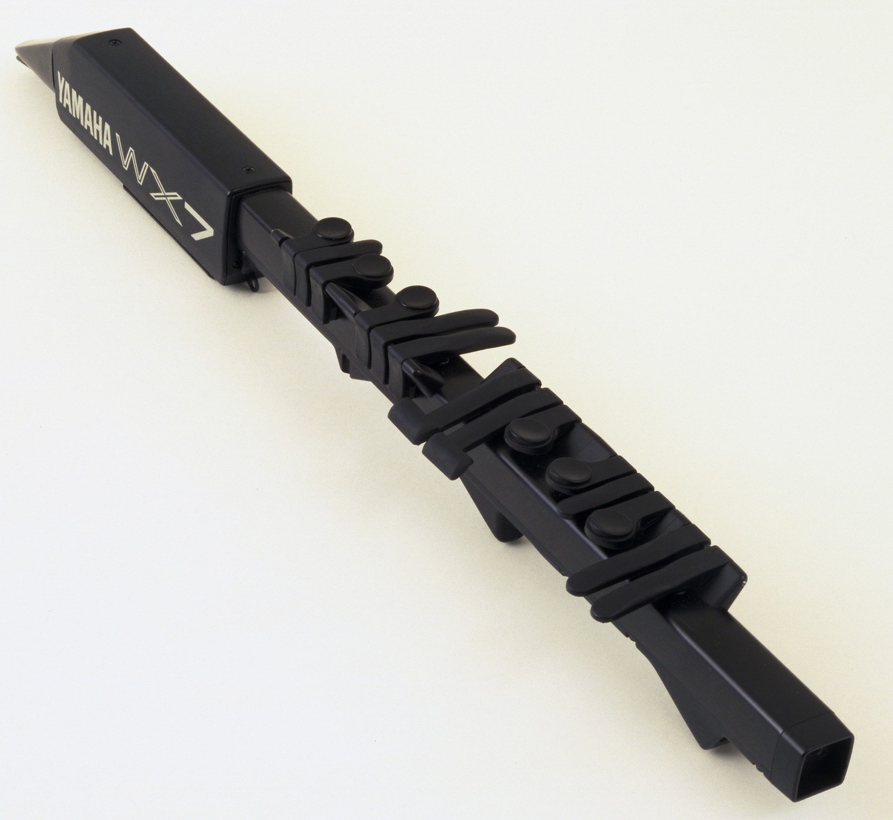
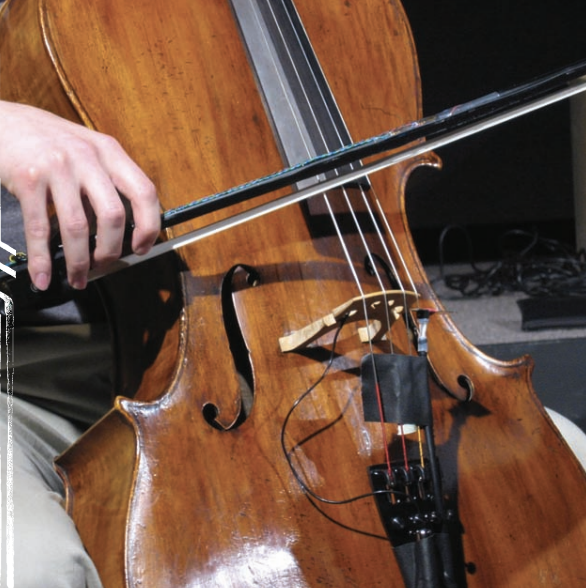

Argument
As discussed by C. Vere Pilkington, harpsichord players
create contrast through timing, articulation, texture,
and ornament rather than force. This means the
instrument does not simply lack expression. It organizes
expression differently, favoring precision and clarity
over continuous dynamic shaping.
Pilkington also argues that these micro-variations in rhythm and articulation may even be more musically significant than dynamic contrast, stating that such nuances have “far more intrinsically musical value than the mere dynamic action of hitting a note harder” (Pilkington, 1935, p. 24, para. 3). This suggests that the harpsichord does not simply lack expressive capacity, but instead organizes expression differently, privileging clarity and precision over continuous dynamic shaping.
Musical Example
The piece relies on rapid repeated notes and hand crossings that depend on precision and articulation rather than sustained shaping. Contrast comes through gesture and registral shifts rather than changes in volume.

The Metropolitan Museum of Art. (n.d.). Harpsichord (Object No. 45.41a-c) [Musical instrument]. https://www.metmuseum.org/art/collection/search/503625
Source Anchor
“notes can be made to stand out by very slight variations in rhythm… or by the careful use of texture or ornament.”
Pilkington, 1935, p. 24, para. 2.
What Changes
- Performers shape expression through timing, articulation, and phrasing.
- Listeners attend to rhythmic vitality and textural clarity.
- Instrumental constraint actively structures style.
Argument
As explained in
The Invention and Evolution of the Piano,
Bartolomeo Cristofori's early design introduced a hammer
mechanism in which the force applied to a key determines
how strongly the hammer strikes the string, and
therefore how loud or soft the resulting sound is. This
represents a crucial departure from earlier keyboard
instruments, enabling a range of dynamics unavailable on
the harpsichord.
The text further emphasizes that this innovation was not simply mechanical, but expressive: the piano made it possible to shape musical lines through continuous variation in intensity, fundamentally altering how music could be written and performed. By contrast, the harpsichord's plucking mechanism produces a relatively fixed volume, limiting expressive contrast to articulation and texture rather than dynamic gradation.
Musical Example
Wolfgang Amadeus Mozart's Piano Sonata in C Major, K. 545 (1788) illustrates this transformation clearly. The opening phrase is structurally simple, but its expressive character depends heavily on dynamic contour and touch. Subtle differences in how the performer shapes the line, through changes in volume and phrasing, significantly affect how the music is perceived.

The Metropolitan Museum of Art. (1720). Piano (Object No. 89.4.1219) [Musical instrument by Bartolomeo Cristofori].
Source Anchor
“the tone could be varied according to the pressure of the fingers on the keys”
The Invention and Evolution of the Piano, p. 3, para. 2.
What Changes
- Touch becomes central to musical meaning.
- Composers write for dynamic contour and phrase shaping.
- Listeners begin hearing nuance as structure.
Argument
According to
The Invention and Evolution of the Piano, the
piano underwent significant structural transformations
between roughly 1750 and 1850, including developments in
strings, materials, and overall construction, which
contributed to changes in how the instrument sounded and
responded. In particular, the evolution of string
materials and tension played a crucial role. The same
source explains that stronger materials, including iron
and eventually steel wire, allowed strings to withstand
greater tension, which contributed to a more powerful
and sustained sound. These developments made it possible
for tones to project more fully and resonate longer,
expanding the expressive potential of the instrument
beyond the more immediate decay of earlier keyboards.
At the same time, the range of the piano expanded significantly. Early instruments had a much more limited compass, but over time “the piano's range thus nearly doubled in less than a century,” reflecting a broader sonic space available to composers.
Musical Example
A clear example of this shift can be found in Ludwig van Beethoven's Piano Sonata in C-sharp minor, Op. 27 No. 2 (“Moonlight”) (1801). The first movement depends on sustained texture and resonance rather than sharply articulated gestures. The continuous triplet motion and overlapping harmonies create an atmosphere shaped by prolongation and connection, made possible by the instrument's growing ability to support longer spans of sound.

The Metropolitan Museum of Art. (1827). Grand piano (Object No. 1972.109) [Musical instrument by John Broadwood & Sons].
Source Anchor
“there have been substantial changes in nearly all aspects of the instrument, including the strings, string layout, hammers, and case”
The Invention and Evolution of the Piano.
What Changes
- Composers think more in terms of register, pedal, and sonic environment.
- Performers shape continuity across longer spans.
- Listeners hear a more continuous expressive field.
Argument
As discussed in
The Piano: A History in 100 Pieces, one of the
most important innovations of the nineteenth century is
the introduction of the cast-iron frame, which allows
the instrument to withstand much higher string tension
without structural failure. This development makes it
possible to increase both volume and sustain,
fundamentally expanding the expressive capabilities of
the instrument.
The book also emphasizes that these structural changes are directly tied to musical practice. With increased sustain and power, composers begin to write music that relies on broader dynamic contrasts, denser textures, and more dramatic gestures. The piano is no longer limited to clarity and nuance, but becomes capable of orchestral effects and large-scale sonic projection.
Musical Example
...

Sigal Music Museum. (n.d.). Oldest original Steinway piano, patented 1858. https://sigalmusicmuseum.org
What Changes
- Performers need more force, endurance, and control.
- The piano becomes suitable for large public spaces.
- Virtuosity becomes part of the instrument's identity.
Argument
This shift reflects a broader reorientation in twentieth-century musical thinking. As discussed in Capturing Sound: How Technology Has Changed Music, modern musical practices increasingly focus on sound itself as a material, rather than on pitch alone, emphasizing timbre, texture, and the physical production of sound. In this context, modifying the piano becomes a way of expanding its sonic vocabulary beyond traditional harmonic functions.
Musical Example
John Cage's Sonatas and Interludes (1946-48) exemplifies this transformation. Through precise preparations, the piano is converted into a hybrid instrument that produces percussive, metallic, and non-pitched sounds alongside recognizable tones. The result is not simply a new timbre layered onto the piano, but a redefinition of what the instrument is. The keyboard remains the interface, but the sound-producing system has been fundamentally altered.

Cage preparing a piano, in 1947.Photograph by Irving Penn / © 1947 (Renewed 1975) Condé Nast Publications Inc.
What Changes
- Composition becomes the design of sonic conditions, not only pitches.
- Performers engage with the instrument's internal setup.
- Listeners hear the piano as fluid rather than stable.
Argument
As discussed in Mark Katz's
Capturing Sound: How Technology Has Changed Music, recording and digital technologies make it possible
for sound to exist independently of the moment of
performance, allowing it to be manipulated, rearranged,
and reproduced in ways that were previously impossible.
In this context, musical sound becomes a flexible,
editable object rather than a fixed result of physical
action.
MIDI (Musical Instrument Digital Interface), introduced in 1983, formalizes this shift by encoding musical gestures as data, such as pitch, timing, and velocity, rather than sound itself. A single performance can therefore be reassigned to different timbres, adjusted rhythmically, or reinterpreted entirely without re-performing the original material.
Musical Example
A simple example can be seen in a MIDI-rendered Mozart phrase. The same sequence of notes can be altered after the fact by modifying timing, articulation, or instrumentation, producing multiple versions of a performance that all originate from the same underlying data. What would once have required multiple performances can now be achieved through post-production manipulation.

Museum of Modern Art. (1986). Wind MIDI controller (model WX7), by Yasuhiro Kira. https://www.moma.org
What Changes
- Composers design systems of control, not only sonic outcomes.
- Performers work through interfaces that mediate gesture and sound.
- Listeners encounter musical versions that may never have existed acoustically.
Argument
This development builds on the broader technological shift described in Mark Katz's Capturing Sound: How Technology Has Changed Music, in which sound becomes increasingly mediated, flexible, and subject to transformation beyond the original act of performance. In hyper-instrument systems, this mediation is no longer confined to recording or post-production. It becomes active during performance itself.
Musical Example
....
....

The Hyperbow allows players of the acoustic cello to delicately tweak the instrument's timbres without learning any new bowing techniques
What Changes
- Composers design systems of interaction rather than fixed sequences alone.
- Performers negotiate with a responsive and partly unpredictable instrument.
- Listeners hear both human intention and computational behavior.
Synthesis
Across these transformations, the keyboard evolves from a fixed mechanical system into a flexible and responsive interface. Early instruments shape style through constraint. The piano introduces control through touch, and later developments expand resonance, range, and power. Twentieth-century experiments challenge the identity of the instrument itself, while digital systems make sound programmable and detachable from performance. Hyper-instruments extend this trajectory further, turning performance into an interactive process between human and machine.
Final Claim
Musical style is therefore not only influenced by
instruments. It is continuously reorganized by them. At
each stage, changes in how sound is produced lead to
changes in how music is imagined, performed, and
perceived. What begins as a relationship between fingers
and mechanism becomes, over time, a dynamic interaction
between gesture, system, and response.
Seen in this way, the history of keyboard instruments is not just a history of technological innovation. It is a history of shifting musical possibilities, in which each new instrument redefines what it means to compose, perform, and listen.
Throughline
- Mechanism shapes gesture.
- Gesture shapes sound.
- Sound shapes style.
- New interfaces reshape listening itself.
References
Scholarly and Historical Sources
- Pilkington, C. Vere. The Harpsichord: Its Present and Future. 1935.
- Hess, Albert G. The Transition from Harpsichord to Piano. 1953.
- Cole, Michael. Transition from Harpsichord to Pianoforte - the important rôle of women. 2002.
- Giordano, Nicholas. The Invention and Evolution of the Piano. 2016.
- Katz, Mark. Capturing Sound: How Technology Has Changed Music. University of California Press, 2004.
- Tomes, Susan. The Piano: A History in 100 Pieces. Yale University Press, 2021.
Musical Works and Listening Examples
- Scarlatti, Domenico. Sonata in C Major, K. 159. c. 1730s.
- Mozart, Wolfgang Amadeus. Piano Sonata in C Major, K. 545. 1788.
- Beethoven, Ludwig van. Piano Sonata No. 14 in C-sharp minor, Op. 27 No. 2 (“Moonlight”). 1801.
- Liszt, Franz. Hungarian Rhapsody No. 2. 1847.
- Cage, John. Sonatas and Interludes. 1946-1948.
- Mozart, Wolfgang Amadeus. MIDI-rendered excerpt from Piano Sonata in C Major, K. 545.
- Machover, Tod. Hypercello. 1990s.